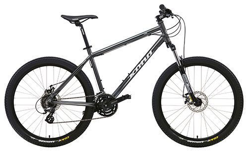

В 1817 году немецкий профессор барон Карл фон Дрез из Карлсруэ создал, а в 1818 запатентовал первый двухколёсный самокат, который он назвал «машиной для бега» (Laufmaschine). Самокат Дреза был двухколёсным, снабжён рулём и выглядел в целом, как велосипед без педалей; рама была деревянной.
С 70-х годов XIX века стала приобретать популярность схема «пенни-фартинг». Название описывает несоразмерность колёс, ибо монета пенни была намного больше фартинга.
Первый велосипед, похожий на используемые в наши дни, назывался Rover — «Скиталец». Он был сделан в 1884 году английским изобретателем Джоном Кемпом Старли и выпускался с 1885 года. В отличие от велосипеда «пенни-фартинг», Ровер обладал цепной передачей на заднее колесо, одинаковыми по размеру колёсами, и водитель сидел между колёсами[3].
Первый складной велосипед сделан в 1878 году, первые алюминиевые — в 1890-х годах, а первый лигерад (иногда называемый рикамбент, велосипед, на котором можно ездить в лежачем положении) — в 1895 году (а в 1914 году началось массовое производство лигерадов фирмой «Пежо»).
Велосипеды продолжали совершенствоваться и во второй половине XX века. В 1974 году началось массовое производство велосипедов из титана, а в 1975 — из углепластика. В 1983 году был изобретён велокомпьютер. В начале 1990-х получили распространение системы индексного переключения скоростей.